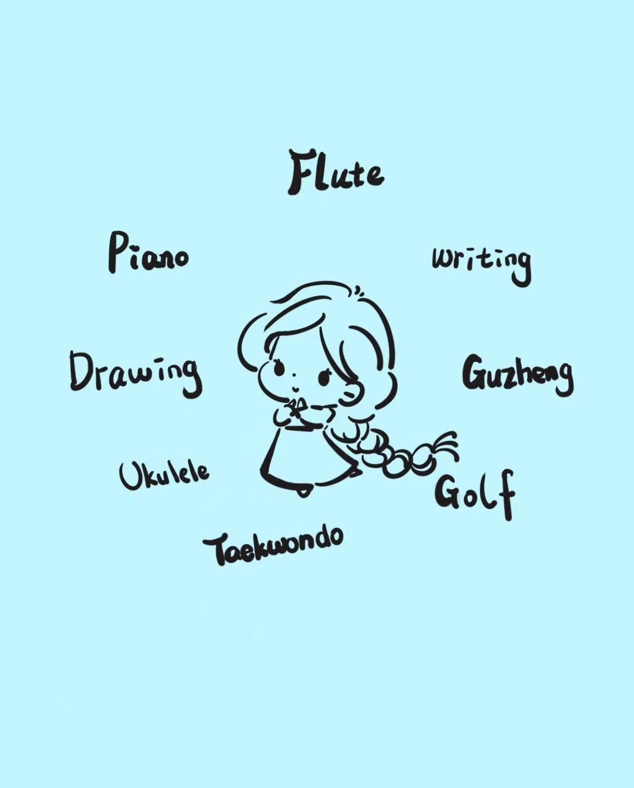
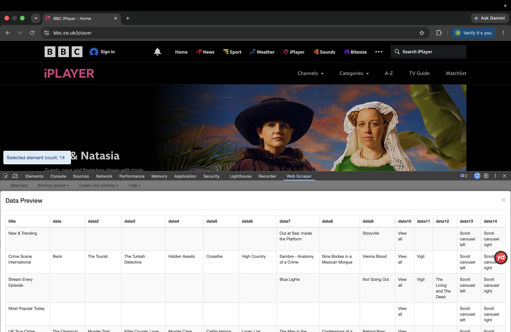
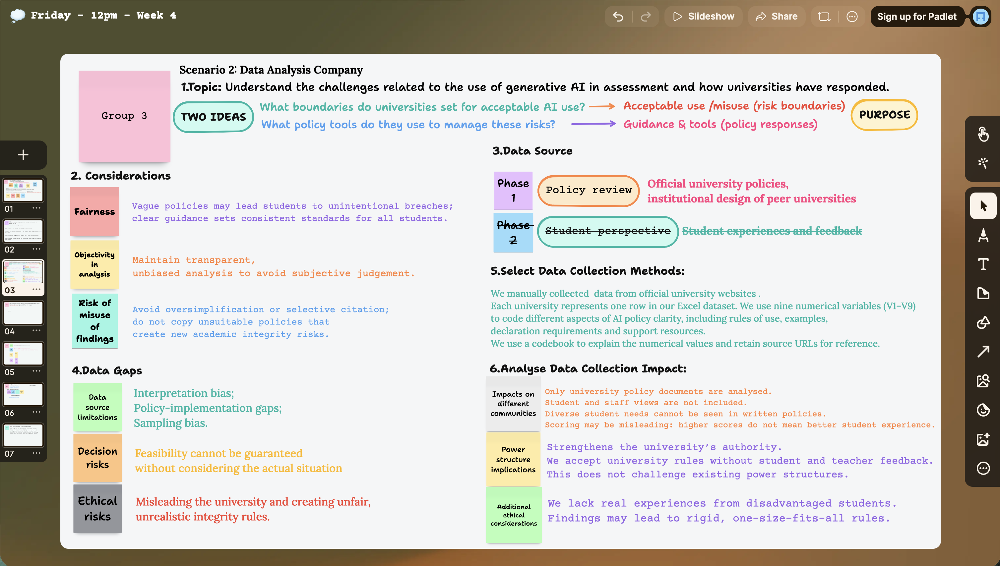
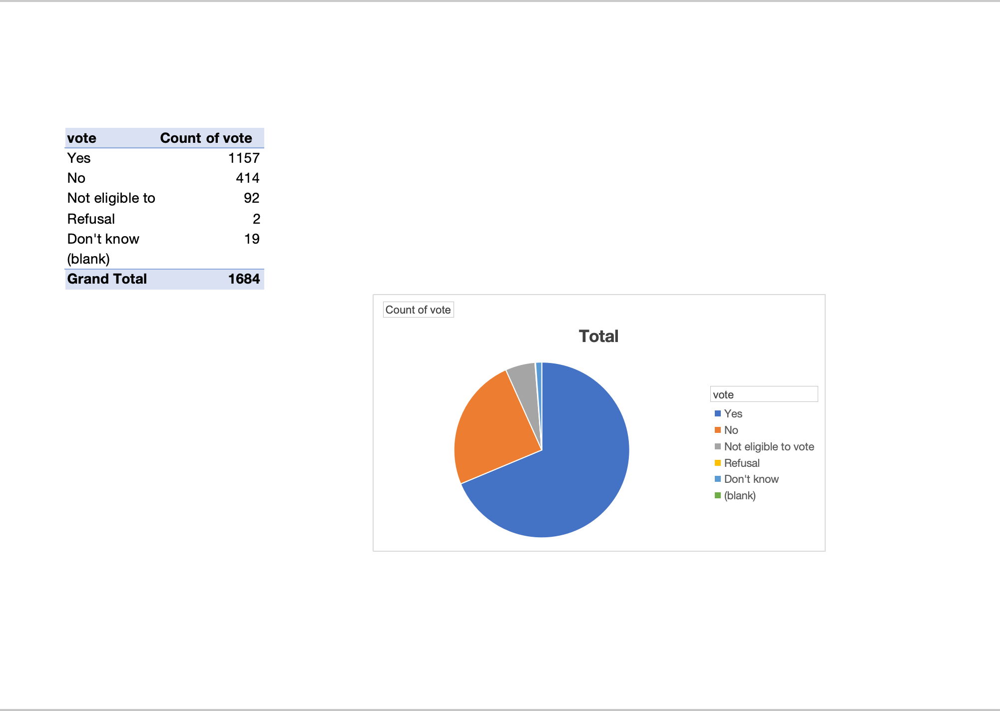
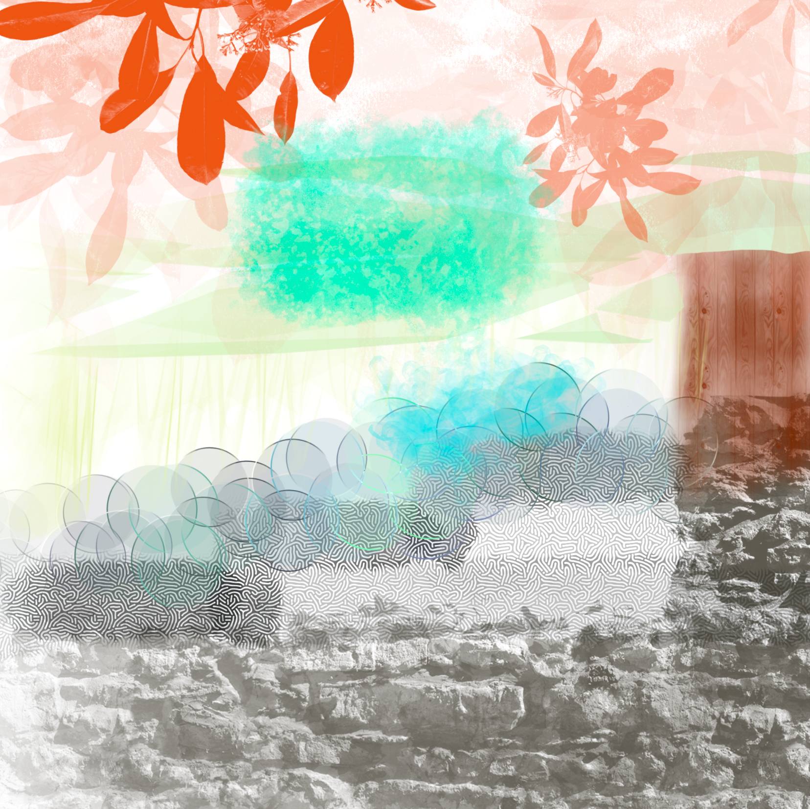

Art & Design
Exploring visual ideas, illustration and creative expression.
✦ WELCOME ✦
Digital Media student, creative thinker and lover of art, design and visual culture.
EXPLORE ↓DESIGN · CREATE · REFLECT
01 / ABOUT ME
I am a Digital Media student at the University of Leeds. My background is in design, and I am interested in visual culture and creative expression.
I enjoy exploring creative ideas and finding ways to combine creativity with digital media.
DESIGNER · CREATIVE THINKER

02 / MY INTERESTS
Inspirations that shape my creative practice.
Exploring visual ideas, illustration and creative expression.
Music, artists and the feelings and stories behind songs.
Style, colour and fashion as a way to show personality.
Exploring new places, cultures and small wonderful moments.
03 / WEEKLY REFLECTIONS
In Week 1's lecture, we were introduced to the core ideas of digital practices. The lecture asked what it means to study digital culture rather than simply use digital tools, and introduced the question of how people interact, create meaning and connect online. This session helped me understand the aims of the module before I began building my portfolio website.
Baym (2010) argues against technological determinism: the meaning of a technology is not built into the technology itself, but is assigned by people through everyday use, social norms and cultural context. In other words, digital media do not automatically change society; people make sense of, and reshape, them. This changed how I see everyday digital spaces. Before this session, I only thought social media and websites were simple places to share information. Now I understand they are spaces shaped by human behaviour and social choices, which is why studying digital practices means studying people as much as studying tools.
Thinking with Baym, when I design my own pages I should consider who will visit them and what meaning they might take away, rather than focusing only on the technical side of building.
This week's workshop focused on creating and deploying a portfolio website with GitHub Pages. I learned the basics of HTML structure, wrote my own files, and hosted a live website online.
The Week 2 lecture explored digital networks, infrastructure, platforms and algorithms, and the shift from networks to platforms. Gillespie (2018) describes platforms as online sites that host, organise and circulate users' shared content for them, and argues that platforms' hidden decisions — including moderation rules and recommendation choices — shape what becomes visible. Although platforms present themselves as neutral, open spaces, their decisions quietly arrange what we see and what we publish.
Building my own site made this difference practical: on a social platform the layout, ranking and visibility are decided for me, but on my GitHub Pages site I decide the page structure, sequence and emphasis myself. I now understand that platforms do not merely host content; they quietly shape what we can see and share, and that small design decisions change how visitors experience a site.
This week I explored web scraping and experimented with WebScraper.io to collect information from BBC iPlayer web pages. It was fascinating to gather data online automatically, though I also ran into problems: at first I could only collect a small amount of data because I had selected a single element rather than selecting the same data across repeated rows. Once I selected the repeated row pattern, the scraper collected all the show titles.
D'Ignazio and Klein (2020) remind us that data never simply "speaks for itself": what we collect, how we select it and how we clean it are all human decisions. The workshop also raised ethical questions about scraping: respecting robots.txt and terms of service, avoiding personal data, and asking why the data is needed before collecting it.
This practical task showed me that scraping is not only a technical skill. Understanding HTML and the logic of a page helps me decide what counts as useful data, while theory and ethics decide how that data should be used. It made me want to learn more about online datasets and the patterns hidden inside web data.

In Week 4 we worked in groups to build our own dataset. Our group took Scenario 2 and acted as a data analysis company helping a UK university understand generative AI in assessment. We narrowed our question to how UK universities require students to declare generative AI use in assignments, set six variables, and collected text from the official websites of ten universities (Imperial, KCL, Edinburgh, Manchester, Leeds, Oxford, Cambridge, Bristol, Bath and York).
D'Ignazio and Klein (2020), in their principle of rethinking binaries and hierarchies, argue that what gets counted counts: classification systems look neutral but include, exclude, label and mislabel people and situations, reflecting the position of whoever designs them. Our coding choices — for example, splitting policies into "permitted", "restricted" or "prohibited" — were not neutral facts but interpretive decisions.
This task taught me that making a dataset is a creative and interpretive process, not just copying information from websites. Every choice of what to collect, what to leave out and how to categorise information creates bias; even official policy documents represent only one point of view. It requires clear coding rules and consistent decision-making as a team.

In class we shared observations from the Week 4 dataset work. We managed to organise and code the policy documents, but our findings only reflected formal written rules rather than users' real experiences, so we were only partially successful. We collected publicly available text from official websites and left out the voices of students and teaching staff; if I had more time and resources, I would run a second research phase with student interviews and surveys to give a fuller picture of how these policies operate in practice.
D'Ignazio and Klein (2020) also argue that data visualisations are not neutral mirrors of reality; they present a situated perspective and should make their own choices visible. This helped me see that Excel charts are not merely tools for presenting final results.
After this group reflection, we learned data visualisation using Excel, and I found that visualisation can also act as a research method: turning raw data into charts helped me reveal patterns I had not noticed in the tables. I now look more critically at the charts I see in everyday life, asking what was counted, what was left out, and who made those choices.

This week's workshop used three tasks to explore identity online: Input (what data we share with platforms), Output (what platforms show us back based on how they understand "us"), and Process (using Sumpter's (2018) method to imitate how platforms profile users). In the Process task I manually categorised social media posts into fixed categories. When a video covered several topics at once, I chose the category that took the largest share of the content; when there was no clear main topic, I looked for the broadest overlap. I realised that however I widened or narrowed the categories, rich content was always simplified, and some voices were dropped.
The lecture began from relational identity. Markham (2024), drawing on symbolic interaction, describes identity as "an ever-shifting assemblage emerging in continuous (inter)actions" and "a continuous negotiation over time" with others; there is no finished self waiting inside me to be expressed, and "identity is always forming, never formed." This changed how I see my own profiles: my online self is not a fixed picture I upload, but something that emerges in every post, like and reply, and it can both sediment into habits and still change.
The lecture's first argument is that platforms do not neutrally host identity work; they actively shape it. Hearn (2017) calls self-branding a form of affective labour, in which we deliberately work on our personality and image to gain attention, reputation and profit, and optimisation loops turn gender, beauty and class into measurable parameters — watch time and clicks decide which performances survive rather than social judgement. I recognised this in my own habit of "optimising" how I present myself online, and in how this logic spills off-screen into CVs and job interviews.
The second argument is that algorithms extract from us, and what matters most is not the content we post but metadata. Cheney-Lippold (2017) shows that an inbox's metadata — who we message, when, and how long we read — already assembles a descriptive social network without reading a single word; Sumpter (2018) adds that "it is the accumulation of many different likes that reveals our personalities, not any single click," and that unlike forgiving friends, algorithms systematically collect and analyse our emotional state for profit. In my Process task I only labelled visible content, but the lecture showed that the data I never consciously chose to share — timing, duration, patterns — is what builds the profile.
The third argument is that datafication produces a "data double": a collection of scores, categories and risk profiles that stands in for the person, and Eubanks (2018) documents how welfare systems already judge people through these risk scores instead of meeting them face to face. The fourth argument pushes back against the popular idea that we are fully in control online: Turkle's (1997) early MUD research was optimistic that we could freely rewrite ourselves, but today that agency is constrained by commercial logic and extraction. My own categorisation task was a small reminder of this: even when I classify someone myself, I simplify them into a category, and the algorithm version of me may differ from who I think I am. The question the seminar left us — where human agency still sits under algorithmic identity — is where my own negotiation space begins.
In Week 7 we shared the challenges we encountered using Sumpter's method. The hardest part was deciding the category of each post, especially videos that cover several topics at once and posts with several photos on different themes. I chose the category that took the largest share of the content, and when there was no clear main topic, I looked for the broadest point of overlap. I also realised that no set of categories can classify rich content accurately; something is always simplified.
We also rated five excerpts from 0–100% for likelihood of being AI-generated, and every group produced different scores and explanations. Sumpter (2018) reminds us that prediction models are only as reliable as their data and assumptions, and the wide disagreement between groups showed how uncertain human judgement is when facing the same unknown material.
This reflective pause made me see that classification and detection are never fully objective, whether done by a person or an algorithm; both rely on incomplete categories and leave room for error.
Week 8 introduced digital ecologies. In the workshop we slowed down and sensed our environment directly, focusing on touch, smell, hearing and temperature rather than sight alone, and then translated our experience into a sensory map using colours and symbols. I noticed that when I stopped relying only on sight, my other senses became sharper, and the place felt different from how I usually experience it through maps, photos and videos online.
After leaving the classroom, I walked downstairs to experience nature. There was a pond in front of the building, and I met a grey heron (Ardea cinerea) standing in the middle of the pond, seemingly waiting for a fish or almost asleep. The sky was blue with a few white clouds; shifting my focus away from sight, I listened to the sounds around me — wind rustling the leaves, passers-by approaching and fading away, people nearby talking about the afternoon. It was an unprecedented experience, and I felt myself merging into nature, measuring early winter with my footsteps. Back in the classroom, we shared what we had seen, and then the teacher invited us to choose one sense and draw a route through the building. Walking along the rough stone wall with my group, when I focused on touch I felt the texture and temperature of the stone, which translated into a grainy grey in my mind. At the smooth glass doorway I realised I had reached another place, and I smelled coffee; entering the café, I first touched the cold cabinet and recognised it as a food chiller — an icy blue in my mind. As I walked on, the smell grew richer and warmer, and when I touched the wooden counter I felt a healing warmth that I chose to represent with red-brown. These two experiences could each be read through different senses, and they were connected to one another.

Searle et al. (2024), in the introduction to Digital Ecologies: Mediating More-than-Human Worlds, examine how digital media mediate our relations with more-than-human worlds — animals, plants, weather and environments — and state that their position is neither diagnostic nor deterministic; the aim is to raise questions rather than give answers. Our practice had no standard answer either: it used different ways of sensing to rethink our relationship with the non-human world.
Two things stood out. First, senses have a "priority": I usually rely on sight and hearing, while touch, smell and temperature are almost ignored, and digital media can mainly pass on sight and sound. Second, turning experience into a map is a kind of translation: choosing colours and symbols keeps the overall atmosphere but loses exact textures, just as data classification simplifies rich content. Every act of sharing, digital or not, is a positioned translation rather than a perfect copy of reality.